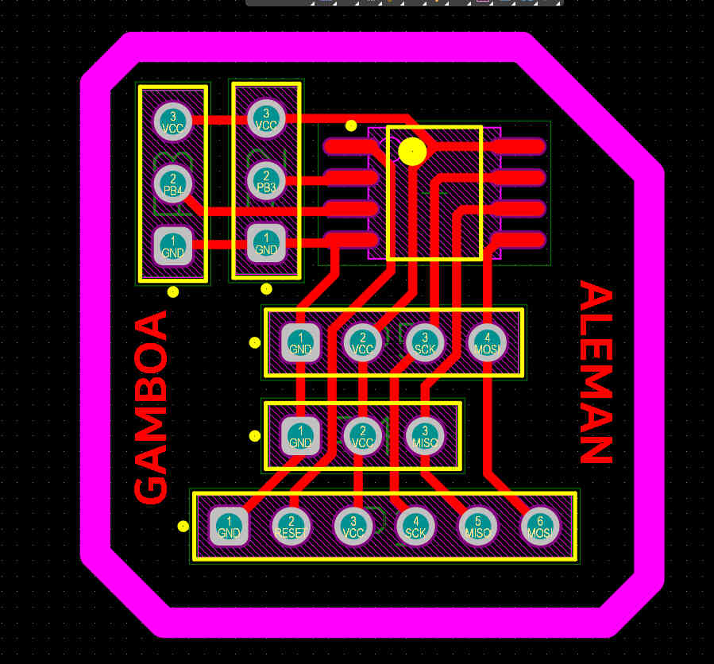
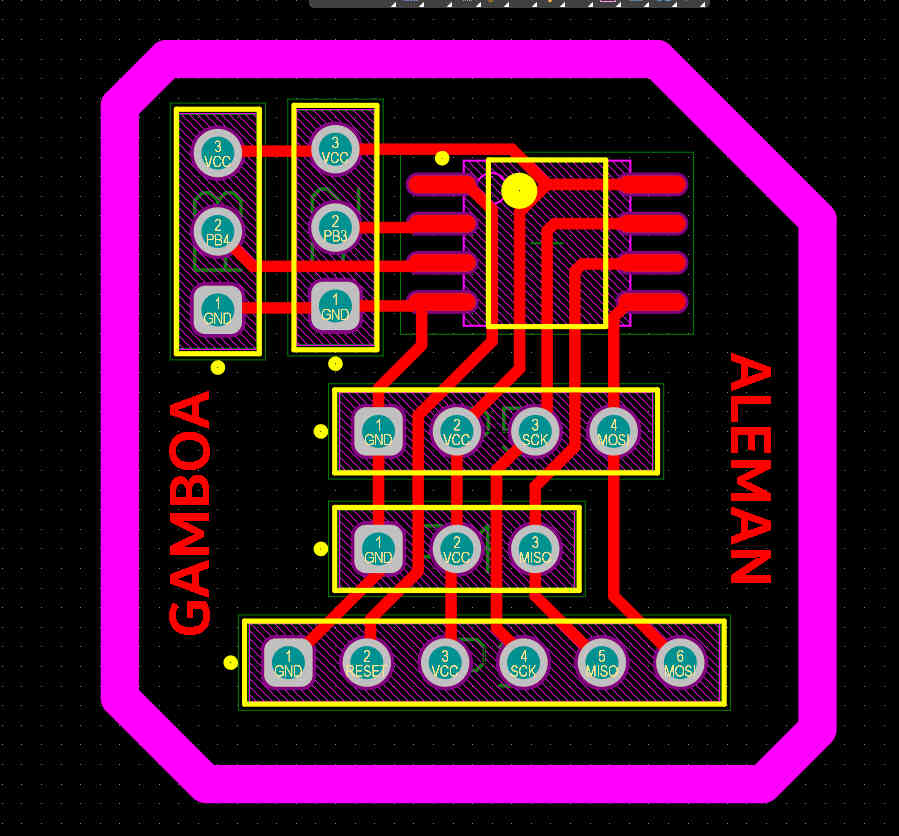

Reporte de proyecto final.
Isaac Antonio Peréz Alemán
28/11/2024
Resumen
Comencé mi proyecto final inspirado en un diseño encontrado en línea, adaptándolo a las especificaciones de un robot de 5 cm. Modelé un diseño 3D para mi robot, probando varias ideas antes de optar por una mecánica similar al proyecto de Autodesk. Verifiqué mis conexiones en un protoboard y fabriqué la PCB, utilizando sus dimensiones para diseñar una pieza 3D que la integre. Ahora continuaré diseñando el modelo completo en 3D y ensamblando los componentes. Referencia del proyecto en Autodesk Instructables.
Materiales usados en esta practica:
- Arduino UNO 1
- Servomotor 2
- Cable para soldar
- OLED 2
- Modulo BT: HC05 2
- ATTINY 45V 2
Primero coloqué mis componentes en una protoboard para verificar su funcionamiento.
Codigo utilizado en esta practica
Mi PCB fue diseñada utilizando el programa altium , basándome en las conexiones necesarias según los componentes disponibles. Además, añadí pines estratégicos para facilitar su conexión.
 
Exporto el diseño del PCB en formato PNG, ya que posteriormente lo importaré al programa Inkscape.
En el programa Inkscape, ajustaré las dimensiones de la hoja del documento para que coincidan con las medidas de mi PCB. Esto permitirá reducir el tamaño del documento y optimizar su visualización en Moods. Luego exportare en formato SVG.
Importé el documento en formato SVG en la configuración del programa Mods CE y configuré los parámetros correspondientes.
Comencé diseñando la estructura en CATIA, lo cual resultó ser un desafío, ya que surgieron errores durante el proceso. Sin embargo, tras varios ajustes, conseguí diseñar un robot perfectamente adaptado a las especificaciones requeridas.